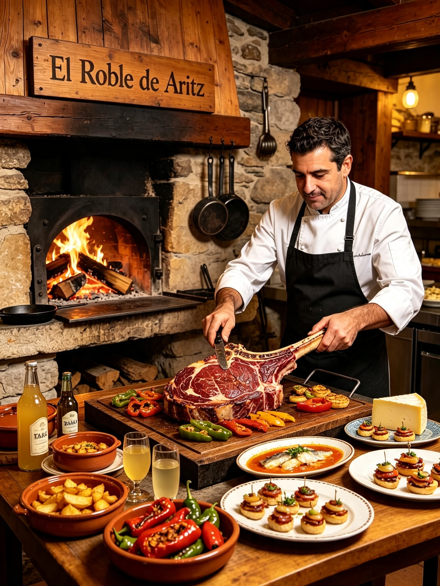

Restaurante tradicional de leña · Vitoria
Cocina de fuego vivo con memoria de caserío
En el roble de Aritz asamos, curamos y ahumamos cada plato sobre madera de roble, usando el producto de las huertas y lonjas de Álava como único mapa de ruta.

Concepto
Filosofía gastronómica
Nuestra cocina parte de una idea sencilla: el fuego no esconde, revela. Cada pieza se trabaja a la madera de roble, sin atajos ni salsas que disimulen el producto, dejando que el sabor de la materia prima sea siempre el protagonista de la mesa.
El aroma de la madera es el ingrediente que no aparece en ninguna etiqueta, pero está en cada plato que sale de esta cocina.
El chef
Aritz González se formó en cocinas de Vitoria y Buenos Aires antes de volver a Vitoria para abrir El Roble de Aritz en 2016. Su cocina combina la técnica de parrilla sudamericana con el recetario tradicional vasco, priorizando siempre el producto de temporada y kilómetro cero.
Hoy dirige un equipo de doce personas y mantiene una relación directa con baserritarras, arrantzales y ganaderos de la provincia, a quienes visita cada semana para elegir el género que llegará esa noche a la mesa.
Reconocimientos
- 2025 Estrella Michelin — primera distinción del restaurante.
- 2024 Sol Repsol — cocina de producto y brasa.
- 2023 Premio Euskadi Gastronomika a la mejor sala.
- 2022 Mención en la guía «50 Mesas de Fuego» de Europa.
Platos estrella
Una selección de los platos que definen nuestra cocina, disponibles en la carta o dentro del menú degustación.

Chuletón de vaca vieja
45 días de maduración, asado entero al carbón y trinchado en sala.

Rodaballo de costa
Pescado del día a la parrilla, con pil-pil ligado en sala.

Pimientos de Gernika asados
Recogidos la misma mañana, asados al golpe de brasa y sal en escamas.
Ubicación
Estamos en pleno Casco Viejo de Vitoria, a cinco minutos andando de la Catedral de Santa María y del Mercado de Abastos, donde compramos el pescado cada mañana.
Abrimos de lunes a sábado. Recomendamos reservar con antelación, especialmente para el menú degustación de fin de semana.
Reservar mesa